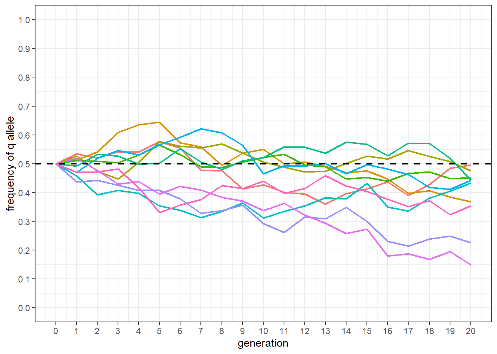

Chapter 3 Random drift in the idealized population
3.1 Introduction
This exercise makes use of equation 3.1 to produce a series of figures depicting random drift. The code is written such that key parameters can be changed and the results observed. Only the tidyverse library is used for the exercise. flextable was used for generating the tables in Rmarkdown.
3.2 Flexible parameters
If we look closely at Figure 3.1 and Equation 3.1 we can devise a set of parameters whose effects will be interesting to explore. Both axis of the figure, generation and q frequency, are obvious choices. Population size and the number of lines might also prove interesting. These parameters with general starting values are defined as variables below.
The challenge is a little more complex than simply substituting values into equation 3.1. One must remember that we can only predict the magnitude of the change in gene frequency and not the direction. As such, we need to step the lines forward through each generation using the results of the previous generation. A for loop will help us do this.
3.3 Making a For Loop
Before starting the for loop we need to make a data frame to store the data. For each line, a data frame of 7x columns and as many rows as generations defined in the parameters (NB: initially 20). The gen column provides the generation number. q_0 and p_0 provide the gene frequencies. N equates to the population size of each line. The variance, var, standard deviation, sd, and the change in gene frequency, diff, columns are calculated fields that will be filled in by the for loop. The first few columns of the data frame are shown for reference. Zero values have yet to be determined.
gen | q_0 | p_0 | N | var | sd | diff |
|---|---|---|---|---|---|---|
0 | 0.5 | 0.5 | 100 | 0 | 0 | 0 |
1 | 0.5 | 0.5 | 100 | 0 | 0 | 0 |
2 | 0.5 | 0.5 | 100 | 0 | 0 | 0 |
3 | 0.5 | 0.5 | 100 | 0 | 0 | 0 |
4 | 0.5 | 0.5 | 100 | 0 | 0 | 0 |
5 | 0.5 | 0.5 | 100 | 0 | 0 | 0 |
Data frame setup and the for loop are nested inside a function names random_drift. The function accepts a vector of population sizes, N, as input, and produces the complete data frame described earlier. For reference, the code is provided below.
The data frame, df, is first written. The for loop is then specified to run from 1 to the number of generations + 1. The extra generation is added to accommodate the base, or 0, generation.
The for loop begins with a few if functions. The first if function updates the frequency of q_0 for every generation other than the 0 generation. If generation is greater than 0 then q_0 is adjusted based on the change in gene frequency determined in the preceding generation. The second and third if functions handle the loss or fixation of the q allele should this occur through random drift. Once the calculated frequency of q either goes below 0 or above 1, the frequency will remain at either 0 or 1 in the line.
After the if functions, p_0 is calculated as (1 - q_0) in line 4. This is important since q_0 is re-written for every generation above 0. The variance of the change in gene frequency using equation 3.2 is then calculated in line 5. Next, the standard deviation is derived from the variance in line 6. Finally, the predicted change in gene frequency is modeled in line 7. Since dispersive processes have no direction, and the calculated variance is not a measure of magnitude for a single line, the prediction takes advantage of the base R function, rnorm. The function pulls a defined number of samples from a normal distribution with a specified mean and standard deviation. For our purposes, a single sample is drawn from a normal distribution with a mean of 0 and a standard deviation equating to the variance of gene frequencies in the current generation. Because a mean of 0 is used, the predicted change in frequency can be negative or positive. The prediction is written to the diff column where it can be used to adjust the frequency of q in the following generation.
The return(df) function specifies the desired output from the random_drift function.
random_drift <- function(pop_size){
df <- data.frame(gen = 0:generations,
q_0 = q_0,
p_0 = 0,
N = pop_size,
var = 0,
sd = 0,
diff = 0)
for(i in 1:(generations+1)){
if(df$gen[i] > 0){df$q_0[i] <- df$q_0[i-1] + df$diff[i-1]} # line 1
if(df$q_0[i] <= 0) {df$q_0[i] <- 0} # line 2
if(df$q_0[i] >= 1) {df$q_0[i] <- 1} # line 3
df$p_0[i] <- 1 - df$q_0[i] # line 4
df$var[i] <- df$q_0[i] * df$p_0[i] / (2 * df$N[i]) # line 5
df$sd[i] <- (df$var[i])^0.5 # line 6
df$diff[i] <- rnorm(1, mean = 0, sd = df$sd[i]) # line 7
}
return(df)
}The following code runs the function. An lapply function is used to run random_drift for the population size and number of lines specified. The rbind within a do.call function simply takes all the data frame outputs and binds them into a single data frame. That last bit of code simply adds a line identification number for graphing purposes.
df <- do.call(rbind,
lapply(rep(pop_size, lines),
FUN = random_drift)) %>%
mutate(line = rep(1:lines, each = generations + 1))Data pertaining to the first line is shown below. One can see how the for loop builds out the data from generation 0 onward. Starting at the specified gene frequency, the variance is calculated and the change in gene frequency is predicted. The prediction is then applied to the next generation and the calculations repeated.
gen | q_0 | p_0 | N | var | sd | diff | line |
|---|---|---|---|---|---|---|---|
0 | 0.5000000 | 0.5000000 | 100 | 0.001250000 | 0.03535534 | 0.070796851 | 1 |
1 | 0.5707969 | 0.4292031 | 100 | 0.001224939 | 0.03499913 | -0.036542475 | 1 |
2 | 0.5342544 | 0.4657456 | 100 | 0.001244133 | 0.03527227 | -0.016755211 | 1 |
3 | 0.5174992 | 0.4825008 | 100 | 0.001248469 | 0.03533368 | -0.004618980 | 1 |
4 | 0.5128802 | 0.4871198 | 100 | 0.001249171 | 0.03534361 | -0.025099044 | 1 |
5 | 0.4877811 | 0.5122189 | 100 | 0.001249253 | 0.03534478 | 0.014039025 | 1 |
6 | 0.5018202 | 0.4981798 | 100 | 0.001249983 | 0.03535510 | 0.003591051 | 1 |
7 | 0.5054112 | 0.4945888 | 100 | 0.001249854 | 0.03535327 | 0.010919394 | 1 |
8 | 0.5163306 | 0.4836694 | 100 | 0.001248667 | 0.03533648 | -0.015693384 | 1 |
9 | 0.5006372 | 0.4993628 | 100 | 0.001249998 | 0.03535531 | -0.049150173 | 1 |
10 | 0.4514871 | 0.5485129 | 100 | 0.001238232 | 0.03518853 | -0.017061040 | 1 |
11 | 0.4344260 | 0.5655740 | 100 | 0.001228500 | 0.03504997 | -0.017878071 | 1 |
12 | 0.4165479 | 0.5834521 | 100 | 0.001215179 | 0.03485941 | -0.026908380 | 1 |
13 | 0.3896396 | 0.6103604 | 100 | 0.001189103 | 0.03448337 | -0.001850899 | 1 |
14 | 0.3877887 | 0.6122113 | 100 | 0.001187043 | 0.03445349 | 0.043043373 | 1 |
15 | 0.4308320 | 0.5691680 | 100 | 0.001226079 | 0.03501541 | 0.011927576 | 1 |
16 | 0.4427596 | 0.5572404 | 100 | 0.001233618 | 0.03512289 | -0.012217919 | 1 |
17 | 0.4305417 | 0.5694583 | 100 | 0.001225878 | 0.03501254 | 0.030443122 | 1 |
18 | 0.4609848 | 0.5390152 | 100 | 0.001242389 | 0.03524754 | 0.028158941 | 1 |
19 | 0.4891438 | 0.5108562 | 100 | 0.001249411 | 0.03534700 | 0.070786466 | 1 |
20 | 0.5599302 | 0.4400698 | 100 | 0.001232042 | 0.03510045 | 0.091641053 | 1 |
3.4 Plotting the results
The following code produces a plot similar to Figure 3.1. The base population q frequency is shown as a dashed line. Each line is given a different color. The biggest difference between the plot and Figure 3.1 is the lack of selection in the simulation.
df %>%
mutate(line = factor(line)) %>%
ggplot() +
geom_line(aes(x = gen, y = q_0, group = line, color = line),
linewidth = 0.75) +
scale_y_continuous(limits = c(0, 1),
breaks = seq(0, 1, by = 0.1)) +
scale_x_continuous(limits = c(0, generations),
breaks = seq(0, generations, by = 1)) +
geom_hline(yintercept = 0.5, linewidth = 0.75,
color = 'black', linetype = 'dashed') +
xlab('generation') +
ylab('frequency of q allele') +
theme_bw() +
theme(legend.position = "none")